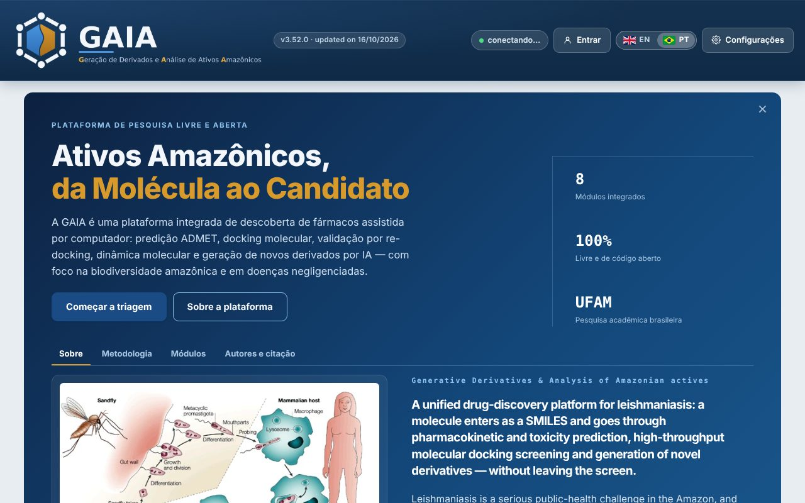

GAIA
Geração de Derivados e Análise Inteligente de Ativos Amazônicos
Plataforma acadêmica gratuita de triagem in silico. Uma molécula entra como SMILES e passa por validação, predição farmacocinética e de toxicidade, docking molecular, dinâmica molecular e geração de derivados, com foco em leishmaniose e na biodiversidade amazônica.
Verificando se a plataforma está no ar…
O que é a GAIA
A leishmaniose é um problema sério de saúde pública na Amazônia, e a biodiversidade da região é fonte de moléculas ainda pouco exploradas. A GAIA reúne, numa só tela, as etapas que normalmente exigem várias ferramentas separadas: confere a molécula, prevê o seu perfil ADMET, simula a ligação ao alvo e propõe derivados inéditos a partir dela, conferindo se já existem em bancos públicos (PubChem, ChEMBL, ZINC). Integra a Tese de Doutorado de Douglas Emanuel Mota de Souza no Programa de Pós-Graduação em Inovação Farmacêutica (PPGIF) da Faculdade de Ciências Farmacêuticas da Universidade Federal do Amazonas (UFAM).
A plataforma

Módulos
Validação
Confere o SMILES, calcula descritores e a regra de Lipinski.
ADMET
Prediz absorção, distribuição, metabolismo, excreção e toxicidade (ADMET-AI).
QSAR
Relaciona descritores farmacocinéticos com a atividade observada, comparando moléculas ativas e inativas do mesmo ensaio.
Docking
Prepara ligante e receptor e roda o AutoDock Vina, com detecção automática do sítio.
Re-docking
Valida o protocolo: RMSD do ligante co-cristalizado contra a pose de raio-X.
Dinâmica molecular
Simula a pose do docking em água explícita (OpenMM) e mede se ela se sustenta.
Derivados
Gera derivados por regras, por fragmentos enriquecidos nas ativas e por aprendizado por reforço, preservando a molécula de partida, e confere o ineditismo.
Retrossíntese
SAscore, desconexões por regras BRICS e, opcionalmente, rotas por AiZynthFinder ou Spaya, com conferência dos reagentes.
Limitações, ditas de antemão
- Predição não é medida. Tudo o que sai daqui é hipótese computacional. ADMET vem de modelo estatístico; afinidade de docking, de função de escore empírica. Nenhum dos dois substitui ensaio in vitro ou in vivo, e a plataforma não é instrumento de decisão clínica.
- O espaço químico amazônico é pouco representado. Os modelos foram treinados sobretudo em compostos sintéticos de bibliotecas farmacêuticas. Produtos naturais da biodiversidade amazônica, que são o objeto desta plataforma, ficam com frequência fora dessa distribuição, e a incerteza real é maior do que a que o número aparenta.
- Receptor rígido. O docking trata a proteína como imóvel. Alvos com sítio flexível ou que mudam de conformação ao ligar pedem dinâmica molecular, que esta plataforma não faz.
- Ineditismo é relativo às bases consultadas. Um derivado ausente de PubChem, ChEMBL e ZINC pode constar em literatura de patente ou em base não consultada. A resposta é 'não encontrado', não 'não existe'.
- Sem internet, parte disso não roda. Estrutura do PDB, nomenclatura e verificação de ineditismo dependem de rede. Validação, ADMET e docking com receptor já baixado funcionam offline.
Aviso. Tudo o que a GAIA produz é hipótese computacional. Não substitui ensaio in vitro ou in vivo, e a plataforma não é instrumento de decisão clínica.
Equipe


Como citar
Souza D.E.M., Oliveira M.D.L., Lins O.N.M.S., Guilhon-Simplicio F. GAIA, Geração de derivados e Análise Inteligente de Ativos Amazônicos: plataforma integrada de triagem virtual. Programa de Pós-Graduação em Inovação Farmacêutica, Universidade Federal do Amazonas, Manaus, Brasil.
BibTeX
@misc{gaia,
author = {Souza, D. E. M. and Oliveira, M. D. L. and Lins, O. N. M. S. and Guilhon-Simplicio, F.},
title = {{GAIA}: Gera\c{c}\~ao de derivados e An\'alise Inteligente de Ativos Amaz\^onicos},
note = {Plataforma integrada de triagem virtual. Programa de P\'os-Gradua\c{c}\~ao em Inova\c{c}\~ao Farmac\^eutica, Universidade Federal do Amazonas},
address = {Manaus, Brasil}
}Código-fonte e acesso
O código-fonte da GAIA ainda não é público. A plataforma pode ser usada online, quando o servidor do laboratório estiver ligado, pelo botão no topo desta página. Para colaboração ou dúvidas, entre em contato com os autores pelos currículos Lattes e ORCID listados acima.
Instituições e apoio